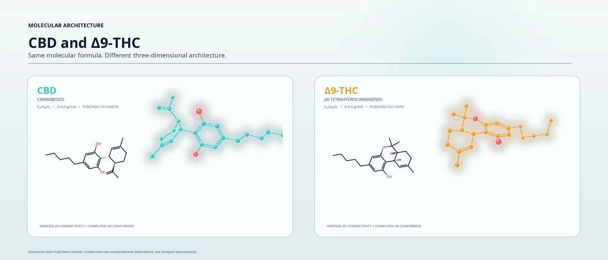

Science · Understanding cannabinoids
CBD and THC: different effects, complex interactions
The two names are often grouped together. Their effects should not be.
Two distinct compounds
THC and CBD are distinct compounds. In cell experiments THC activates the cannabinoid receptor CB1, and in experiments in people it impaired memory and produced temporary psychotic symptoms. CBD has different pharmacology and does not produce the THC-like high. They are not simple opposites. Sources: Laprairie et al. 2015, Englund et al. 2013, Englund et al. 2023, Health Canada: about cannabis

Effects
THC
- Activates the cannabinoid receptor CB1 in cell experiments. Sources: Laprairie et al. 2015
- In experiments in people, impaired memory and produced temporary psychotic symptoms such as paranoia. Sources: Englund et al. 2013, Englund et al. 2023
CBD
- Has different, more complex pharmacology. In cell experiments it can reduce CB1 signalling (negative allosteric modulation); that is a laboratory finding, not a clinical effect. Sources: Laprairie et al. 2015
- Does not produce the THC-like high. Sources: Health Canada: about cannabis Non-intoxicating does not mean inactive or risk-free. Sources: Health Canada: CBD Sleepiness is a listed side effect of one CBD medicine. Sources: Epidyolex SmPC
Clinical evidence
THC
- In experimental settings, THC can produce temporary psychotic symptoms. Sources: Englund et al. 2013
- Observational research links daily use, and especially daily use of high-potency cannabis, with higher odds of psychotic disorder. This is an association, not a prediction for any individual. Sources: Di Forti et al. 2019
- THC-containing medicines exist for specified uses, for example a THC and CBD spray for MS-related spasticity. Sources: Sativex SmPC
CBD
- Licensed in the UK as one specific medicine for seizures in specified epilepsy conditions. Sources: Epidyolex SmPC
- In psychiatry, small trials of other CBD preparations have produced mixed results. Sources: McGuire et al. 2018, Boggs et al. 2018
- Not established as a treatment for people at clinical high risk. NWPT-SM32300 is investigational.
Interactions
THC
- Combining THC with CBD does not reliably reduce THC’s effects. Sources: Englund et al. 2023, Chesney et al. 2025
- A high oral CBD dose given with THC increased THC exposure and impairment in one study. Sources: Zamarripa et al. 2023
CBD
- CBD can change how some other medicines are handled; the UK product information for one CBD medicine describes an interaction with clobazam. Sources: Epidyolex SmPC
- Effects depend on dose, timing, route, formulation and the people studied.
Laboratory mechanisms, experiments in people and product-specific evidence answer different questions; each statement names its source.
Does CBD cancel out THC?
Not reliably.
Some experiments have found reductions in selected effects when CBD was given before THC; others have found no protection or stronger adverse effects. Sources: Englund et al. 2013, Englund et al. 2023, Zamarripa et al. 2023, Chesney et al. 2025
A 2013 experiment found benefits on selected paranoia and memory measures, but not a statistically significant difference in the average positive-symptom score. A 2023 trial adding CBD to inhaled THC found no protective effect on the outcomes tested. Another 2023 trial found greater impairment with a high oral CBD dose combined with THC. In a 2025 trial in people with schizophrenia and cannabis use disorder, CBD pretreatment appeared to worsen the acute memory and psychotic effects of inhaled cannabis. These studies used different regimens and populations.
| Study | Evidence type | Who or what was studied | Preparation and route | What was found | Limit |
|---|---|---|---|---|---|
| Laprairie et al. 2015 | Laboratory | Cells expressing CB1 receptors | CBD applied to cells | CBD reduced CB1 signalling, consistent with negative allosteric modulation | A laboratory mechanism, not clinical protection |
| Englund et al. 2013 | Human experiment | 48 healthy participants | Oral CBD or placebo before intravenous THC | Reduced selected paranoia and memory effects of THC; the average positive-symptom difference was not significant | Route and timing differ from ordinary cannabis use |
| Englund et al. 2023 | Human experiment | 46 healthy, infrequent cannabis users | Inhaled cannabis: fixed THC with increasing CBD | More CBD did not protect against the acute adverse effects measured | Particular ratios in an acute experiment, not every regimen |
| Zamarripa et al. 2023 | Human experiment | 18 healthy adults | Oral extract: the same THC dose with or without high-dose CBD | Greater THC exposure and impairment with CBD added | Small, single doses; participants also took probe drugs |
| Chesney et al. 2025 | Human experiment | 30 people with schizophrenia or schizoaffective disorder and cannabis use disorder | Oral CBD or placebo before inhaled cannabis | No reduction in acute memory or psychotic effects; these appeared worse | Does not establish the effects of CBD alone or of longer treatment |
This evidence does not support using CBD as an antidote or assuming that a CBD-containing cannabis product is safe. It also does not answer every question about CBD used without THC in a different clinical study.
What about psychosis?
THC can produce temporary psychotic symptoms in experimental settings. Sources: Englund et al. 2013 Observational research also links daily cannabis use, and especially daily use of high-potency cannabis, with higher odds of psychotic disorder. Sources: Di Forti et al. 2019 Those findings describe groups; they do not predict an individual’s outcome.
Research into purified CBD as a potential psychiatric treatment asks a separate question. Small trials have produced mixed results. Sources: McGuire et al. 2018, Boggs et al. 2018 A rationale for research is not an established treatment benefit, and it is not evidence that NWPT-SM32300 works.
Safety belongs in the comparison
CBD can cause unwanted effects and interact with medicines. The UK product information for one CBD medicine lists sleepiness and raised liver enzymes (especially with valproate), and an interaction with clobazam. Sources: Epidyolex SmPC A trial of a purified CBD solution reported diarrhoea, vomiting, fatigue, fever, sleepiness and abnormal liver tests. Sources: Devinsky et al. 2017 The exact risks depend on the preparation, dose, other treatments and patient.
Our programme. NWPT-SM32300 is investigational. General cannabinoid research does not establish that it is effective. The Programme Room explains what has been studied, what is planned and what remains unknown; the NWPT formulation page explains what the formulation is designed to do and what has been measured.